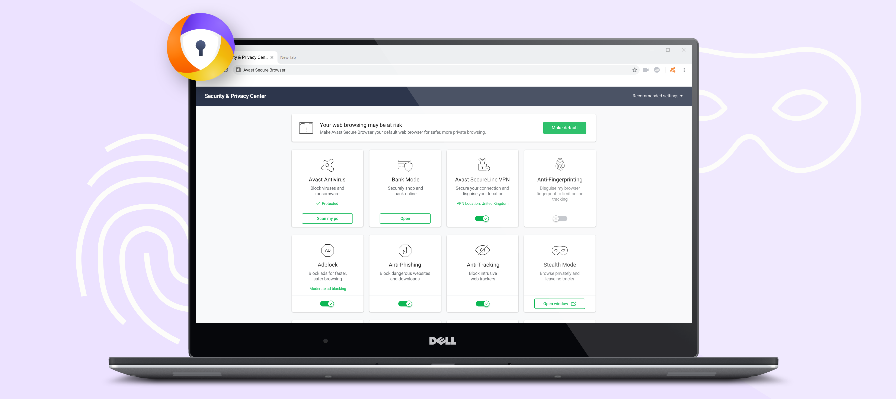
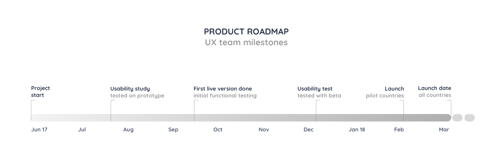
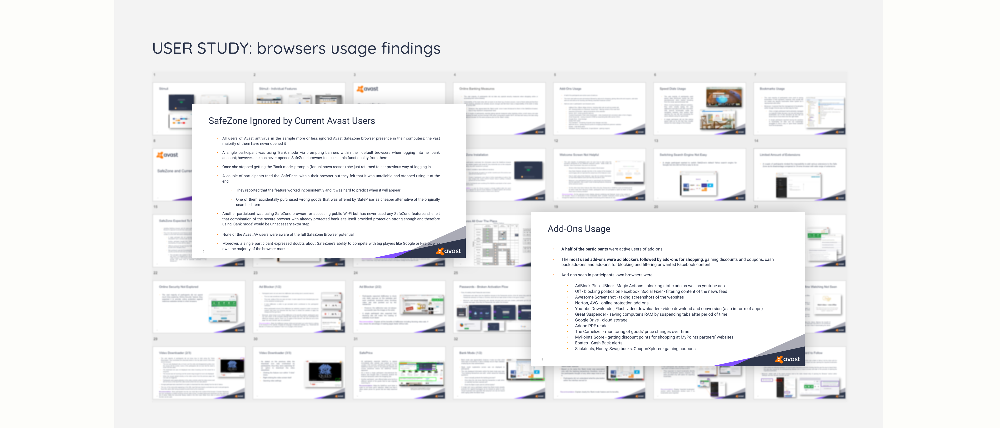
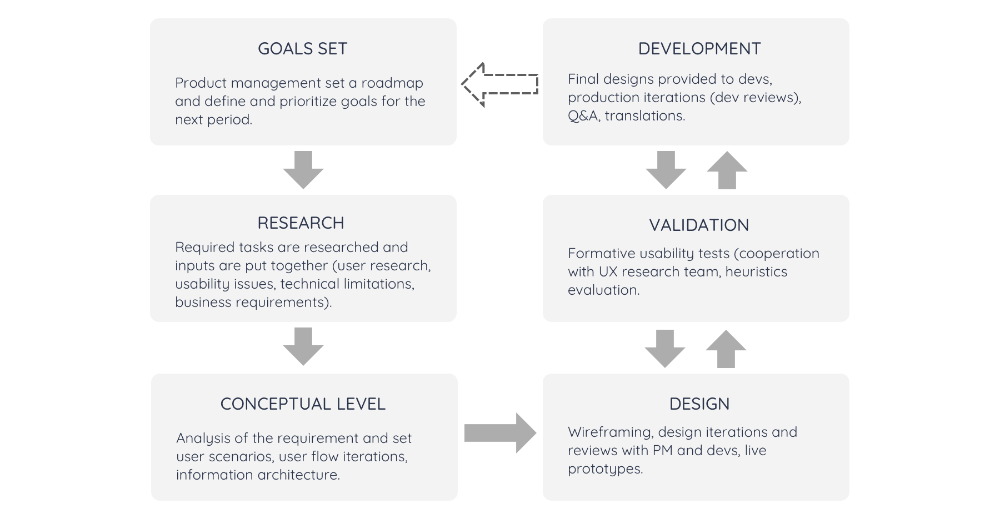
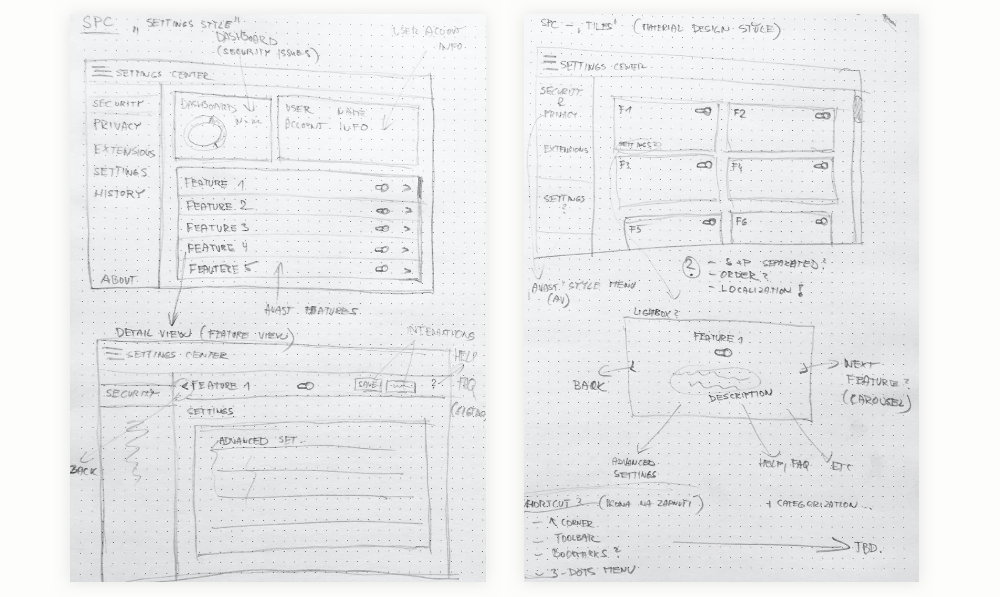
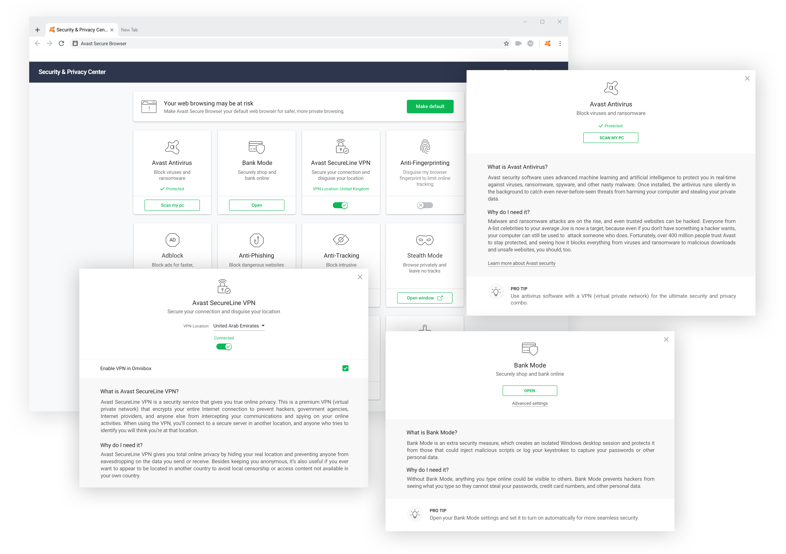
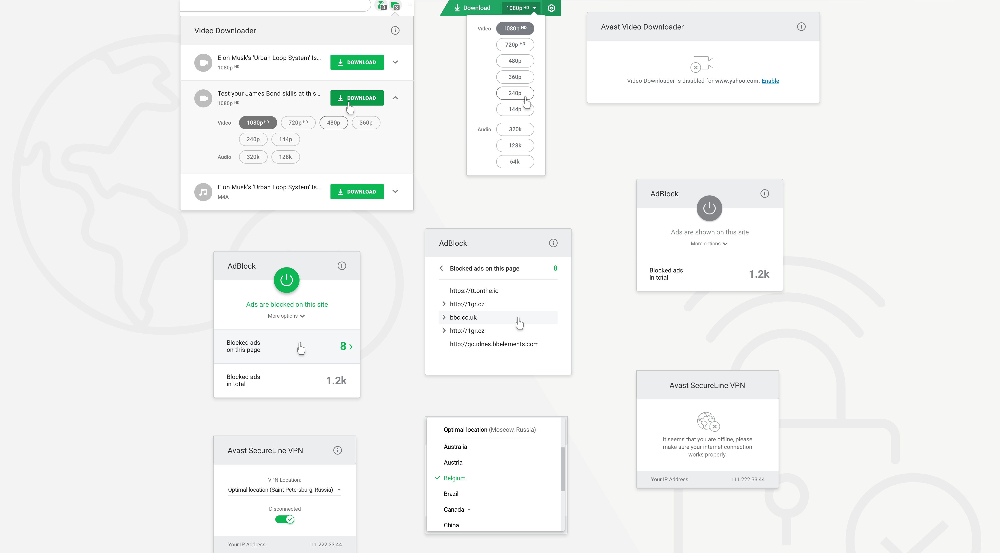
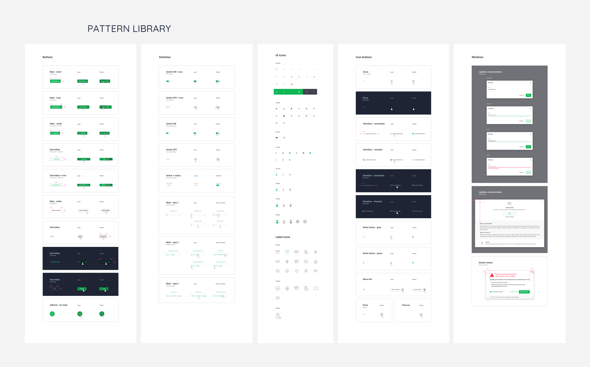

Browsing the internet is becoming a riskier activity as new and more aggressive malicious codes aim to offend users and get more and more data about their online behavior. At the same time, people are becoming more conscious of various security and privacy threats and are motivated to cover them with better solutions to take back the control over their digital lives.

Following my non-disclosure agreement, I did not include confidential information or somehow changed its actual meaning. Moreover, the information in this article are fully my own and do not reflect the views of Avast in any way.
My role in the project
I became a member of an ambitious project of developing a new version of the Avast browser to better meet users’ internet browsing, as well as security and privacy needs. I started to work on the design of the product in June 2017. I was initially responsible for the user experience and visual design, but, fortunately, another designer joined the team two months later, so then I had been less focused on the visual part of the project. During the whole course of the project, I often discussed various issues with designers from different teams in Avast as well, as some parts of the browser use their components. We also cooperated quite closely with designers from the Brand and Marketing team on building up a clear communication toward our customers. In addition, I frequently worked together with user researchers, UX writers, product managers (and quite often with developers, for sure).

The challenge
As internet browsing is one of the most common activities that people do on their computers, the vulnerability of this activity is quite often overlooked. However, we knew through user studies that a safe and private behavior on the internet is becoming an important users’ need, and most people started to realize its necessity.
Avast, as one of the biggest software companies offering user security and privacy enhancements, has also been focusing on bringing a browser with a corresponding level of protection. Our goal for this project was to deliver a product that would put an emphasis on users' security and privacy while browsing the internet as well as providing a user-friendly environment. At the same time, we wanted to educate people on what they should be aware of to protect their security and privacy. It was planned that the first launch version would be designed and developed for Windows OS only.
The approach
When I joined the team, I initially discussed the project and its goals with product managers. Another source of information for me was the previous browser built in the company and, for sure, competitors analysis. My very first steps naturally led to user researchers to discuss their insights and findings gathered from recent user research. These results, together with other analyses, and many requirements from product management, helped us to set up the most important must-have goals to reach. We identified these main goals to be reached for the MVP project:
- Build up a flawless internet browsing experience that people would be familiar with (for a flawless user engagement from the very beginning)
- Emphasize the security and privacy aspects of the browser
- Show users the importance of security and privacy features and try to educate them why is it worth considering

Detailed findings provided by researchers (materials are intentionally blurred)
For many reasons, it was decided to incorporate Avast functionality into the Chromium (which also offers users relatively well-known experience and was quite approved by many browsers on the market). This enabled us to fully concentrate on building up a security and privacy layer of the browser MVP first that would help users with their protection.
Design process
The approach contained tons of iterations testing various design directions. Each of this design phase was prioritized according to its importance and complexity and usually contained an usability test (either with static mockups, interactive prototypes, or one of the first builds of the actual live browser).
There were usually more cycles and designs evolved based on the feedback we got or some other influences (as newly revealed technological or business limitations). Also, a very important part of the whole process was a translation of the product’s copy and its testing (as we released the browser into more than 30 languages, this was a tough challenge).

Based on the initial user research, we were able to get an overview about what our users expect and need when browsing the internet. Surprisingly, a majority of users did not care so much about their security and privacy when shopping online or accessing their banking accounts (although they were aware of some threats). There was a big need to explain to users the vulnerability of the online world and try to show them why and how they can easily manage it by using various security and privacy features. This was the main theme following our design process from the very beginning.
Moreover, users were quite conservative in internet browsing. They did not seek new ways to make this activity more comfortable and learn new things. As we targeted a relatively wide user-base, we must have considered not to overwhelm users with lots of new patterns they had not been used to before. We iteratively tested our concepts during the development to be sure that the solutions are well accepted by users and ready to release.
Building up the Security & Privacy Center
The priority was given to offering users a pack of security and privacy features in an easy-to-use and comprehensive way. We decided to build up a Security & Privacy Center summarizing all security and privacy features of the browser. This approach would help users to access these settings from a single place and recognize the functionality brought by Avast (the Center can be approached via an Avast related toolbar icon).
The Security & Privacy Center includes a variety of features and we worked together with colleagues from different teams to implement the functionality into the browser, which sometimes brought huge technical limitations. This meant a big challenge as my design works were concurrently needed by more development teams. The emphasis was put on building a trust with users as well-known Avast features were used.

Early design explorations of the Security & Privacy Center
Let’s test and validate
I researched several ideas of how the Security & Privacy Center could be designed. Some of them were finalized as mid-fidelity prototypes and tested with users. This phase brought a lot of meaningful findings; the general ones, that users are getting more and more conscious about security and privacy when the features are visible in the browser (although, as mentioned above, they did not initially care so much about them). Prototyping was definitely the most effective way to gain quick initial feedback from our users in a relatively short time and I used this validation many times during the whole project.

Browser’s in-built extension
Another part of the project was an integration of some functionalities as in-built features which was strongly corresponding to what we acknowledged about user needs in the research phase. This is the case of the three following add-ons: Adblock, VPN, and Video Downloader.
Users started to be more annoyed with pervasive ads and required an effective and reliable tool for their blocking (as these tools have been getting more common in recent years). There was also a need to include a VPN function as users are using it much more often than previous years (and Avast has a relatively long tradition on the VPN market). At the same time, a specific group of users called for a possibility to watch internet videos offline (which is definitely not as much a security feature, but worth having in a browser).

Pattern library: a way to better team communication
During the development we also created step by step our design patterns library for a better documentation of the product (the Avast design system had been still developing at this time). As the team grew and became quite international (design, PM, and developers were located in different countries), this started to be a must-have task which would be definitely important in future development. Our plan was to eventually build up a functional design library that would be a useful collection of reusable components, standards, and guidelines (together with all used assets, such as graphics, specs, and code snippets).

A part of the pattern library containing all available components of the product and their specification.
Towards the final phase
Once we agreed on the proposed solutions with PMs, we worked together with the visual designer and UX writers on the final designs. The process involved creating high-fidelity mockups (using mostly Sketch & InVision for a fluent communication toward our product team) and animations of micro-interactions (I used Origami Studio for them). Finally, we provided this material, together with graphic specifications (in Zeplin projects) and timing keyframes for micro‐interactions, to developers.
As the last step, we conducted another set of usability test sessions (remote sessions with our target users) right after we had the first functional version of the whole browser with the most important features. As the release date was getting close, we needed again to focus only on a few of the defined user scenarios that were for many reasons important for the product (especially the security and privacy features, in-built extensions, and its interaction compatibility with the browser).
We improved some designs based on the gained findings and a single feature was removed from the first release (as the date was very close) and its improvement was planned for the following versions. However, most of the scheduled tasks were successfully accomplished. After everything was set up, we released the first version.

Avast Secure Browser webpage where you can download the product.
A complex project makes you a better designer?
When I think about this project, what I learned and what I appreciate the most, I must say that it was the general complexity we faced almost every single day. I needed to have a lot of flexibility in my work to be able to work concurrently on two or three different parts which were changing regarding their set priority. I had never before experienced such a complex workload that could be hardly scheduled and fulfilled.
On the other hand, working on this project was everything but boring. I liked working together with product managers discussing various required features (and learning new things about browsers themselves), I enjoyed every usability test session while absorbing all the user feedback, and talking with developers about the most effective solutions for both sides. Did this project make me a better designer? Well, I don’t know. But, I am pretty sure that I learned the importance of proper team communication which can rapidly increase the overall work productivity.
← BACK TO PROJECTS